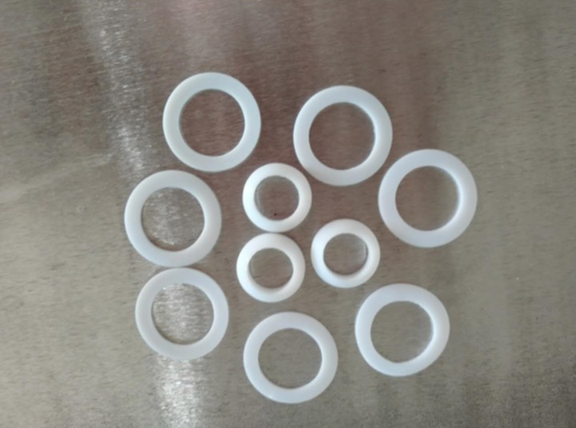
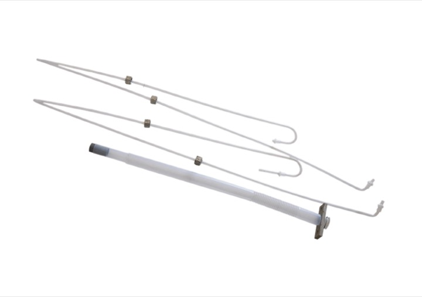
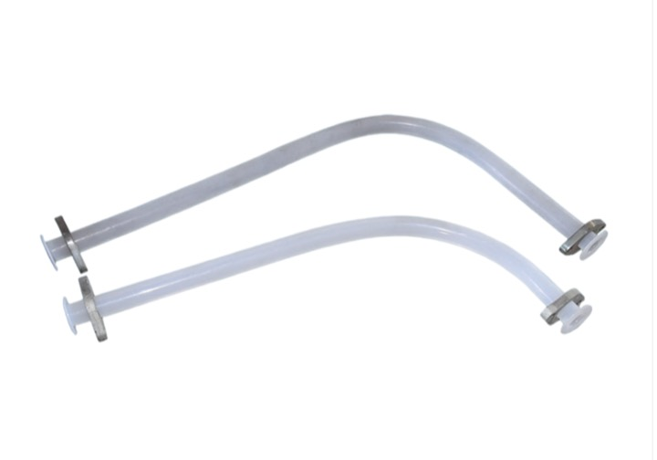
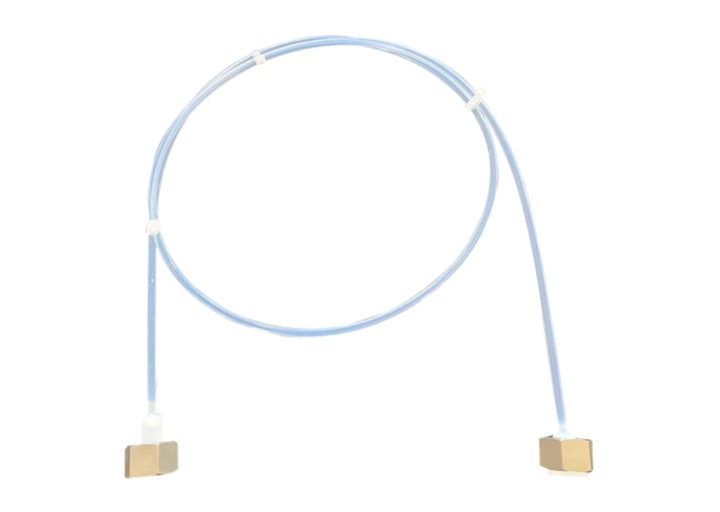

Ftoroplast önümleri

Senagat rezin we ftoroplast dykyzlandyryş çözgütleri
Ftoroplast önümleri
Ýokary islegli dykyzlandyryş önümleriniň ýerli önümçiligi.Önüm galereýasy
Ftoroplast önümleri
Ýokary islegli dykyzlandyryş önümleriniň ýerli önümçiligi.
Ftoroplast önümleri
Ftoroplast şlang

Ftoroplast önümleri
Ftoroplast şlang

Ftoroplast önümleri
Ftoroplast şlang
Ftoroplast önümleri
Ftoroplast önümleri işläp taýýarlamak tehnologiýasy
PTFE, PFA, FEP/F46 we PVDF dykyzlandyryş önümleri üçin galypda şekillendirmekden, walslamakdan, sanjymdan, örtükden we soňky işlemekden tehniki bellikler.Compression molding
Fluoroplastic compression molding can produce plates, rods, sleeves, tapes, sealing rings, diaphragms and parts with metal inserts. The PTFE process normally includes preforming, sintering and cooling. Preforming presses PTFE powder into a dense billet at room temperature; sintering heats the billet above the melting point; cooling brings it down to room temperature.
Typical controls: PTFE compression ratio 4-6; molding shrinkage 2.6-4.5%; suspension-polymerized resin with soft powder of 20-500 microns; preforming pressure 17-35 MPa with venting during pressing. A 100 mm billet is usually held for about 15 minutes.
Sintering and cooling
Sintering needs controlled temperature rise. A practical heating rate is 20-120 C/hour, with slower heating for larger parts. Suspension resin is commonly sintered at 370-380 C, while dispersion resin is commonly sintered at 360-370 C. Higher sintering temperature increases shrinkage and porosity, so sintering time must be controlled.
Cooling is usually slow at 15-25 C/hour. Fast cooling is reserved for special thin parts, such as sheets below 5 mm or thin-wall extruded tubes. Some products are annealed at 100-120 C for 4-6 hours.
Rolling
PTFE diaphragms can be formed by unidirectional or multidirectional rolling. After rolling, the original opaque white PTFE sheet becomes a translucent crystal-like film.
Unidirectional rolling passes the reheated transparent sheet through two rotating rolls; the rolling ratio is usually 1.5-2.5 and roll speed is about 20 rpm. Multidirectional rolling gradually reduces sheet thickness after sintering and quenching; the rolling ratio is usually 2-2.5, roll temperature 150-200 C and steam pressure 0.5-0.9 MPa.
Injection molding
PFA, a copolymer of tetrafluoroethylene and perfluoroalkyl vinyl ether, is melt-processable and suitable for injection molding. Its processing window can reach 425 C and decomposition temperature is above 450 C; normal processing is controlled at 330-410 C.
PFA has very low moisture absorption, about 0.03%, so drying is normally unnecessary. Inserts are preheated to about 140 C. Barrel zones can be 200-210 C, 300-310 C and 350-410 C; nozzle temperature is slightly below the highest barrel temperature; mold temperature is 140-230 C; injection pressure is 40-90 MPa; injection speed should be moderate and cooling time is about 40-150 seconds.
Secondary processing
Because of fluoroplastic processing characteristics, some products need secondary operations before they become usable finished parts. Common methods include machining, welding, lining and expansion.
Machining is similar to metal cutting and uses lathes, drilling machines and planers; billets should stand for about 24 hours before cutting. Welding includes hot-press welding above 327 C with pressure, and hot-air rod welding with PFA rods. PTFE and FEP linings can protect ferrous metal pipes and fittings against corrosion.
Expansion, lining and material development
Expansion is used for bellows, heat-shrink tubes and heat-shrink films, with continuous and intermittent processes. For F46 heat-shrink tube billets, water-cooled vacuum sizing may be used; draw ratio 3-7, melt cone length 10-20 mm, mold temperature 80-160 C, expansion pressure 0.1-0.2 MPa and line speed 80-500 mm/min.
Examples include PTFE machine-tool guide soft tape, PTFE blends with polystyrene, polyimide or poly-p-hydroxybenzoate, fillers such as graphite, molybdenum disulfide and bronze powder, glass-fiber reinforced PTFE pipe linings, PVDF sealing rings, fluorinated epoxy resin, perfluoroelastomers, thermoplastic fluororubber and perfluoropolyether materials.